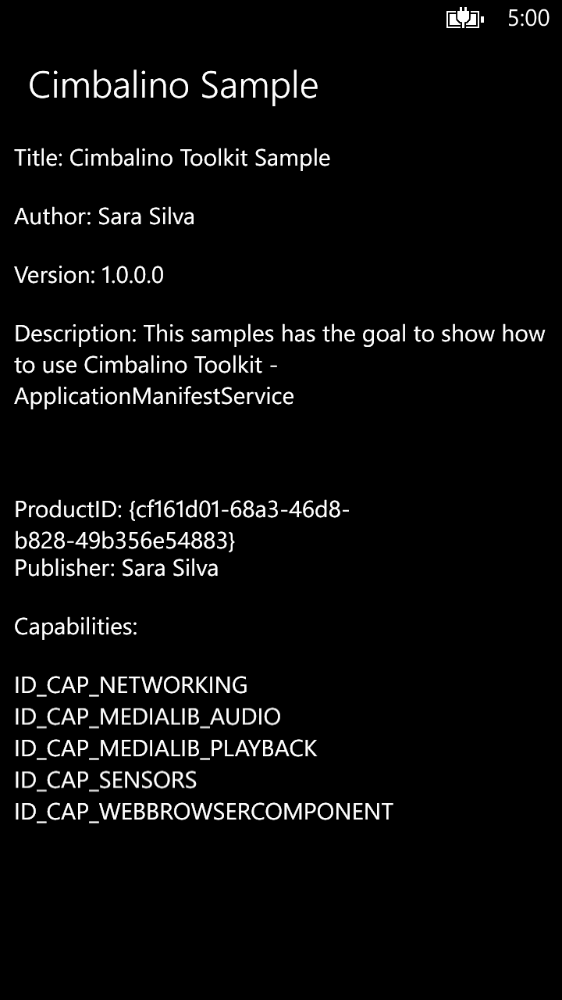

This samples has the goal to show how to use Cimbalino Windows Phone Toolkit – ApplicationManifestService.
Cimbalino Windows Phone Toolkit is a set of useful and powerful items that will help you build your Silverlight applications for Windows Phone. The Toolkit is divided in projects which deliver different features. The base project (Cimbalino.Phone.Toolkit) contains base MVVM services, some very useful converters, helper classes and extension methods, and the bindable Application Bar behaviour.
You only need Visual Studio 2013 and Windows Phone 8.1 SDK.
Description
This packages is available in Nuget Package Manager (for both targets) and can be installed, for more details see: How to install Cimbalino Windows Phone Toolkit packages.
The sample for this article uses MVVM Light for help in MVVM pattern implementation, for more details see:
Let’s start!
We should register each service in ViewModelLocator, as following:
/// <summary>
/// This class contains static references to all the view models in the
/// application and provides an entry point for the bindings.
/// </summary>
public class ViewModelLocator
{
/// <summary>
/// Initializes a new instance of the ViewModelLocator class.
/// </summary>
public ViewModelLocator()
{
ServiceLocator.SetLocatorProvider(() => SimpleIoc.Default);
if (!SimpleIoc.Default.IsRegistered<IApplicationManifestService>())
{
SimpleIoc.Default.Register<IApplicationManifestService, ApplicationManifestService>();
}
SimpleIoc.Default.Register<MainViewModel>();
}
public MainViewModel MainViewModel
{
get
{
return ServiceLocator.Current.GetInstance<MainViewModel>();
}
}
public static void Cleanup()
{
// TODO Clear the ViewModels
}
}
/// <summary> /// This class contains static references to all the view models in the /// application and provides an entry point for the bindings. /// </summary> public class ViewModelLocator { /// <summary> /// Initializes a new instance of the ViewModelLocator class. /// </summary> public ViewModelLocator() { ServiceLocator.SetLocatorProvider(() => SimpleIoc.Default); if (!SimpleIoc.Default.IsRegistered<IApplicationManifestService>()) { SimpleIoc.Default.Register<IApplicationManifestService, ApplicationManifestService>(); } SimpleIoc.Default.Register<MainViewModel>(); } public MainViewModel MainViewModel { get { return ServiceLocator.Current.GetInstance<MainViewModel>(); } } public static void Cleanup() { // TODO Clear the ViewModels } }
Then we should implement the MainViewModel as following:
/// <summary>
/// This class contains properties that the main View can data bind to.
/// </summary>
public class MainViewModel : ViewModelBase
{
/// <summary>
/// The public application url.
/// </summary>
private readonly string _appUrl;
/// <summary>
/// The application manifest.
/// </summary>
private readonly ApplicationManifest _applicationManifest;
/// <summary>
/// Initializes a new instance of the <see cref="MainViewModel"/> class.
/// </summary>
/// <param name="emailComposeService">
/// The email Compose Service.
/// </param>
/// <param name="applicationManifestService">
/// The application Manifest Service.
/// </param>
/// <param name="marketplaceReviewService">
/// The marketplace review service
/// </param>
/// <param name="shareLinkService">
/// The share Link Service.
/// </param>
public MainViewModel(IApplicationManifestService applicationManifestService)
{
_applicationManifest = applicationManifestService.GetApplicationManifest();
_appUrl = string.Concat("http://windowsphone.com/s?appid=", _applicationManifest.App.ProductId);
}
/// <summary>
/// Gets the title.
/// </summary>
public string Title
{
get
{
return _applicationManifest.App.Title;
}
}
/// <summary>
/// Gets the author.
/// </summary>
public string Author
{
get
{
return _applicationManifest.App.Author;
}
}
/// <summary>
/// Gets the version.
/// </summary>
public string Version
{
get
{
return _applicationManifest.App.Version;
}
}
/// <summary>
/// Gets the description.
/// </summary>
public string Description
{
get
{
return _applicationManifest.App.Description;
}
}
/// <summary>
/// Gets the product ID.
/// </summary>
public string ProductID
{
get
{
return _applicationManifest.App.ProductId;
}
}
/// <summary>
/// Gets the publisher.
/// </summary>
public string Publisher
{
get
{
return _applicationManifest.App.Publisher;
}
}
/// <summary>
/// Gets the capabilities.
/// </summary>
public IList Capabilities
{
get
{
return _applicationManifest.App.Capabilities.ToList();
}
}
}
}
/// <summary> /// This class contains properties that the main View can data bind to. /// </summary> public class MainViewModel : ViewModelBase { /// <summary> /// The public application url. /// </summary> private readonly string _appUrl; /// <summary> /// The application manifest. /// </summary> private readonly ApplicationManifest _applicationManifest; /// <summary> /// Initializes a new instance of the <see cref="MainViewModel"/> class. /// </summary> /// <param name="emailComposeService"> /// The email Compose Service. /// </param> /// <param name="applicationManifestService"> /// The application Manifest Service. /// </param> /// <param name="marketplaceReviewService"> /// The marketplace review service /// </param> /// <param name="shareLinkService"> /// The share Link Service. /// </param> public MainViewModel(IApplicationManifestService applicationManifestService) { _applicationManifest = applicationManifestService.GetApplicationManifest(); _appUrl = string.Concat("http://windowsphone.com/s?appid=", _applicationManifest.App.ProductId); } /// <summary> /// Gets the title. /// </summary> public string Title { get { return _applicationManifest.App.Title; } } /// <summary> /// Gets the author. /// </summary> public string Author { get { return _applicationManifest.App.Author; } } /// <summary> /// Gets the version. /// </summary> public string Version { get { return _applicationManifest.App.Version; } } /// <summary> /// Gets the description. /// </summary> public string Description { get { return _applicationManifest.App.Description; } } /// <summary> /// Gets the product ID. /// </summary> public string ProductID { get { return _applicationManifest.App.ProductId; } } /// <summary> /// Gets the publisher. /// </summary> public string Publisher { get { return _applicationManifest.App.Publisher; } } /// <summary> /// Gets the capabilities. /// </summary> public IList Capabilities { get { return _applicationManifest.App.Capabilities.ToList(); } } } }
<vm:ViewModelLocator x:Key="Locator" d:IsDataSource="True" />
<vm:ViewModelLocator x:Key="Locator" d:IsDataSource="True" />
DataContext="{Binding MainViewModel,
Source={StaticResource Locator}}"
DataContext="{Binding MainViewModel, Source={StaticResource Locator}}"
<phone:PhoneApplicationPage x:Class="CimbalinoSample.MainPage"
xmlns="http://schemas.microsoft.com/winfx/2006/xaml/presentation"
xmlns:x="http://schemas.microsoft.com/winfx/2006/xaml"
xmlns:d="http://schemas.microsoft.com/expression/blend/2008"
xmlns:mc="http://schemas.openxmlformats.org/markup-compatibility/2006"
xmlns:phone="clr-namespace:Microsoft.Phone.Controls;assembly=Microsoft.Phone"
xmlns:shell="clr-namespace:Microsoft.Phone.Shell;assembly=Microsoft.Phone"
DataContext="{Binding MainViewModel,
Source={StaticResource Locator}}"
FontFamily="{StaticResource PhoneFontFamilyNormal}"
FontSize="{StaticResource PhoneFontSizeNormal}"
Foreground="{StaticResource PhoneForegroundBrush}"
Orientation="Portrait"
SupportedOrientations="Portrait"
shell:SystemTray.IsVisible="True"
mc:Ignorable="d">
<!-- LayoutRoot is the root grid where all page content is placed -->
<Grid x:Name="LayoutRoot" Background="Transparent">
<Grid.RowDefinitions>
<RowDefinition Height="Auto" />
<RowDefinition Height="*" />
</Grid.RowDefinitions>
<!-- TitlePanel contains the name of the application and page title -->
<StackPanel x:Name="TitlePanel"
Grid.Row="0"
Margin="12,17,0,28">
<TextBlock Margin="12,0"
Style="{StaticResource PhoneTextTitle2Style}"
Text="Cimbalino Sample" />
</StackPanel>
<!-- ContentPanel - place additional content here -->
<Grid x:Name="ContentPanel"
Grid.Row="1"
Margin="12,0,12,0" >
<TextBlock TextWrapping="Wrap"
VerticalAlignment="Top" Height="50">
Title: <Run Text="{Binding Title}"/>
</TextBlock>
<TextBlock TextWrapping="Wrap"
VerticalAlignment="Top" Margin="0,50,0,0">
Author: <Run Text="{Binding Author}"/>
</TextBlock>
<TextBlock TextWrapping="Wrap"
VerticalAlignment="Top" Margin="0,100,0,0">
Version: <Run Text="{Binding Version}"/>
</TextBlock>
<TextBlock TextWrapping="Wrap"
VerticalAlignment="Top" Margin="0,150,0,0">
Description: <Run Text="{Binding Description}"/>
</TextBlock>
<TextBlock TextWrapping="Wrap"
VerticalAlignment="Top" Margin="0,300,0,0">
ProductID: <Run Text="{Binding ProductID}"/>
</TextBlock>
<TextBlock TextWrapping="Wrap"
VerticalAlignment="Top" Margin="0,350,0,0">
Publisher: <Run Text="{Binding Publisher}"/>
</TextBlock>
<TextBlock TextWrapping="Wrap" Text="Capabilities:"
VerticalAlignment="Top" Margin="0,400,0,0"/>
<ListBox DisplayMemberPath="Name" Margin="0,450,0,0"
ItemsSource="{Binding Capabilities}"/>
</Grid>
</Grid>
</phone:PhoneApplicationPage>
<phone:PhoneApplicationPage x:Class="CimbalinoSample.MainPage" xmlns="http://schemas.microsoft.com/winfx/2006/xaml/presentation" xmlns:x="http://schemas.microsoft.com/winfx/2006/xaml" xmlns:d="http://schemas.microsoft.com/expression/blend/2008" xmlns:mc="http://schemas.openxmlformats.org/markup-compatibility/2006" xmlns:phone="clr-namespace:Microsoft.Phone.Controls;assembly=Microsoft.Phone" xmlns:shell="clr-namespace:Microsoft.Phone.Shell;assembly=Microsoft.Phone" DataContext="{Binding MainViewModel, Source={StaticResource Locator}}" FontFamily="{StaticResource PhoneFontFamilyNormal}" FontSize="{StaticResource PhoneFontSizeNormal}" Foreground="{StaticResource PhoneForegroundBrush}" Orientation="Portrait" SupportedOrientations="Portrait" shell:SystemTray.IsVisible="True" mc:Ignorable="d"> <!-- LayoutRoot is the root grid where all page content is placed --> <Grid x:Name="LayoutRoot" Background="Transparent"> <Grid.RowDefinitions> <RowDefinition Height="Auto" /> <RowDefinition Height="*" /> </Grid.RowDefinitions> <!-- TitlePanel contains the name of the application and page title --> <StackPanel x:Name="TitlePanel" Grid.Row="0" Margin="12,17,0,28"> <TextBlock Margin="12,0" Style="{StaticResource PhoneTextTitle2Style}" Text="Cimbalino Sample" /> </StackPanel> <!-- ContentPanel - place additional content here --> <Grid x:Name="ContentPanel" Grid.Row="1" Margin="12,0,12,0" > <TextBlock TextWrapping="Wrap" VerticalAlignment="Top" Height="50"> Title: <Run Text="{Binding Title}"/> </TextBlock> <TextBlock TextWrapping="Wrap" VerticalAlignment="Top" Margin="0,50,0,0"> Author: <Run Text="{Binding Author}"/> </TextBlock> <TextBlock TextWrapping="Wrap" VerticalAlignment="Top" Margin="0,100,0,0"> Version: <Run Text="{Binding Version}"/> </TextBlock> <TextBlock TextWrapping="Wrap" VerticalAlignment="Top" Margin="0,150,0,0"> Description: <Run Text="{Binding Description}"/> </TextBlock> <TextBlock TextWrapping="Wrap" VerticalAlignment="Top" Margin="0,300,0,0"> ProductID: <Run Text="{Binding ProductID}"/> </TextBlock> <TextBlock TextWrapping="Wrap" VerticalAlignment="Top" Margin="0,350,0,0"> Publisher: <Run Text="{Binding Publisher}"/> </TextBlock> <TextBlock TextWrapping="Wrap" Text="Capabilities:" VerticalAlignment="Top" Margin="0,400,0,0"/> <ListBox DisplayMemberPath="Name" Margin="0,450,0,0" ItemsSource="{Binding Capabilities}"/> </Grid> </Grid> </phone:PhoneApplicationPage>
The MainPage will be:

Ask me on twitter @saramgsilva